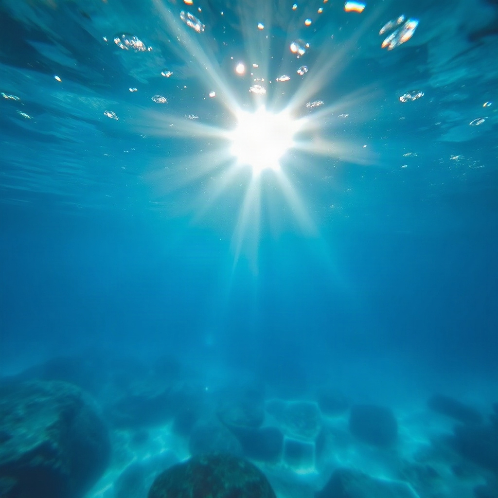
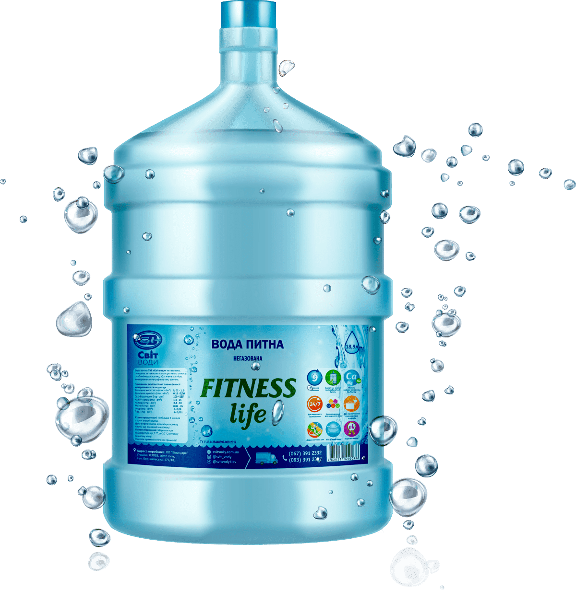

Наші телефони
+380 (67) 123 45 67Графік роботи
Пн-Пт: 08:00 - 20:00
Сб-Нд: 09:00 - 18:00

Дізнайтеся більше про якість, склад та етапи підготовки води, яку ви п'єте щодня. Ми піклуємося про кожну краплю.

Наша вода виробляється з урахуванням усіх стандартів санітарно-епідеміологічної служби України та відповідно до вимог "ДСанПіН 2.2.4-171-10" та стандарту ГОСТ 287482 "Вода питна. Гігієнічні вимоги та контроль за якістю", що дозволяє нам дотримуватись усіх критеріїв якості та безпеки води, розфасованої у ємності.
Мінералізація води визначається співвідношенням води та корисних речовин (кальцій, магній, фтор, йод, різноманітні солі тощо). Наша вода готується за принципом «золота середина», адже відхилення від норм може призвести до порушення водно-сольового балансу організму. Особливо важливі та корисні елементи – фтор та магній.
Наша вода проходить 9 ступенів обробки – від механічного очищення, коли видаляються всі домішки та хлор, до мембранної, при необхідності коригується показник pH, далі знезараження ультрафіолетом та насичення мінералами.
Вода постачається в полікарбонатних бутилях, які не змінюють властивості води та дають можливість її довготривалого збереження. Технологічні можливості дозволяють ретельно стерилізувати обмінну тару перед повторним використанням.
За Вашим замовленням безкоштовно доставимо нашу чисту, якісну та смачну воду за доступною ціною! Розливаємо перед доставкою, привеземо у чітко зазначений час. Можлива доставка води “день в день”, якщо замовлення було оформлене у будній день до 10 ранку.
Можемо доставити воду до будь-якої організації, офісу чи житлового будинку, до будь-якого району міста в найкоротші терміни. Кришки до бутелів універсальні, так що нашу воду можна буде легко встановити в кулер або поставити механічну помпу.
Це справжня корисна вода, яка підходить для приготування їжі, напоїв, харчового льоду та, звичайно, дитячого харчування. Наша вода має ідеально збалансований мінеральний склад, тому смачна і не має сторонніх запахів. Вона не залишає накипу або осаду, відповідає всім вимогам норм води для питних цілей, тому її сміливо можна вживати у сирому вигляді і дорослим, і дітям.